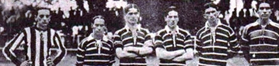

História
Se na época da fundação do Flamengo o remo reinava absoluto como esporte favorito dos cariocas, em pouco tempo outra modalidade começou a rivalizar pela preferência do público: o futebol. E o Flamengo estava predestinado a ter papel de protagonista nesta nova paixão nacional.
Em 1911, houve um desentendimento interno no Fluminense. Alguns jogadores falavam trocar de clube, enquanto outros até mesmo pensavam em abandonar o futebol. Foi quando Alberto Borgerth, um dos jogadores do Fluminense, fez a proposta de criar uma seção de futebol no Flamengo, onde já era remador. A ideia foi aprovada e, no dia 8 de novembro daquele ano, foi criado o Departamento de Esportes Terrestres rubro-negro.
A nova equipe chamava a atenção e dava os primeiros passos para ganhar enorme popularidade treinando na Praia do Russel. Em 3 de maio de 1912 acontece a primeira partida do Flamengo: uma grande vitória de 15 x 2 sobre o Mangueira, no campo da América. A escalação rubro-negra naquele jogo foi Baena, Píndaro e Nery; Coriol, Gilberto e Galo; Bahiano, Arnaldo, Amarante, Gustavo e Borgerth.

Não demorou muito para vir o primeiro título: em 1912 o Flamengo ganhou seu primeiro Campeonato Carioca. A conquista veio com uma rodada de antecedência, após a vitória de 2x1 sobre o Fluminense. Riemer fez o gol do título.
A primeira camisa do futebol foi a "Papagaio de Vintém", quadriculada em vermelho e preto. Em 1914, a equipe passou a atuar com a "Cobra-Coral", que tinha listras horizontais rubro-negras convivendo com listras mais finas e brancas e foi utilizada pela equipe do primeiro título estadua (na foto). O manto Sagrado passou a ter apenas listras horizontais vermelhas e pretas a partir de 1916, quando o novo uniforme estreou em uma vitória de 3x1 sobre o São Bento, de São Paulo.
O grande ano de 2019
Já há muitos anos que não se via uma equipa do futebol brasileiro a ter uma temporada tão bem-sucedida como aconteceu com o já histórico Flamengo da temporada 2019.
Em uma temporada em que recordes atrás de recordes foram batidos, o time de Jorge Jesus apenas não conseguiu terminar da melhor forma essa temporada de sonho. Acabando por perder já na prorrogação a final do Mundial de Clubes, contra o todo poderoso Liverpool.
Por isso, vale a pena resumir e explicar como esse Flamengo de 2019 estará para sempre na história do futebol brasileiro e do futebol sul americano, sendo considerado por muitos os dos melhores times sul-americanos dos últimos anos.
A final emocionante
Todo a temporada exemplar do flamenfo em 2019 levou o time a final da libertadores naquele ano. Seu rival foi o temivel River Plate, time que até o momento era favorito ao título e que parecia ser campeão até os 43 do segundo tempo onde aconteceu o que foi chamado de "milagre de Jesus"
Logo aos 14 minutos do primeiro tempo o River abriu o plcar com Borré após falha da zaga do flamengo. O plcar permanceu assim durante todo o jogo e o trabalho incrivel feito pelo flamengo parecia que seria arruinado apenas por uma falha. Porém, o inesperado aconteceu. Aos 43 minutos do segundo tempo o flamengo consegue empatar com gol de Gabigol e logo em seguida, quando todos pensavam que a partida iria para os pênaltis, novamente gabigol marca e vira pra cima do River para a alegria de toda a nação rubro negra. Com certeza foi uma partida que será relembrada por anos a frente como uma das mais emocionantes da história da libertadores
Algumas goleadas de 2019
Em 2019 o Flamengo fez varios jogos em que marcou mais de três gols em seu adversário. Veja o plcar de agluns desses jogos:
- Flamengo 3×1 Cruzeiro
- Flamengo 3×2 Athlético
- Ceará 0x3 Flamengo
- Flamengo 6×1 Goiás
- Vasco 1×4 Flamengo
- Flamengo 4×1 Corinthians
- Flamengo 4×1 Ceará
- Flamengo 4×1 Corinthians
- Avaí 0x3 Flamengo
- Flamengo 3×0 Palmeiras
- Flamengo 5×0 Grêmio
- Flamengo 3×0 San José-Bol
Esses foram apenas alguns dos jogos, houveram mais que não cabiam nessa lista. Também tiveram jogos importantes que não foram goleadas, más que mostraram a qualidade dessa grande equipe, como o jogo final da libertadores da america contra o forte River plate